资源
正文
预备章节：18 个问题藏着你的人格小秘密
-
你真的了解你自己么?
-
童年能决定一个人的命运么?
-
你的“重要他人”是谁?
-
你的压力来自哪里?
-
什么？太正直所以不快乐？
-
好好先生能说“不”么？
-
“尬聊”十级选手的自白？
-
爱情它是个难题？
-
你为啥这么纠结？
-
你的成功指数有多高？
-
世界上还有害怕成功的人？
-
“玻璃心“自救指南？
-
你是否具备创业者的素质？
-
你的领袖气质有多强？
-
唐僧师徒四人，你最像哪一个？
-
什么样的职业才是好职业？
-
什么样的人格才是魅力人格？
-
你是谁，就遇见谁？
1 寻找自我
1.1 我是一切的根源
- 一个不会游泳的人老换泳池是不能解决问题的;
- 一个不会做事的人老换工作是不能解决问题的;
- 一个不懂得经营爱情的人老换男女朋友是不能解决问题的; 想要找到真爱，你必须知道你是谁。
目的
- 找到自我有多重要？
- 我们有哪些方法找到我们自己？
“我像谁”游戏
{kind=link}
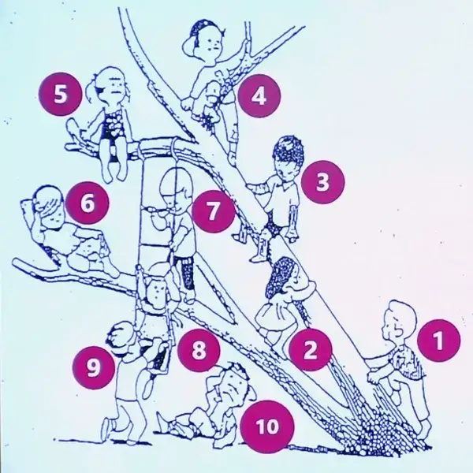
-
你觉得目前自己的状况，最像图中的哪个小孩儿？为什么？
5，向往更好的东西却无所适从。
-
你羡慕哪个小孩，羡慕他哪个地方？
4，有实力还上进。
-
你讨厌哪个小孩，讨厌他哪个地方？
8，靠盘外招获取成就。
小华的答案：
- 我觉得我像 3 号，因为我喜欢帮助别人，你看，3 号自己在爬树的同时，还在帮助爬的慢的 2 号；
- 我羡慕 6 号，他是唯一个无比惬意的小孩;
- 我不喜欢 7 号，他第一个想起用梯子爬树的小孩感觉有点走捷径的意思，很狡猾。
| 我们从经历里找到自己 | 我们从自己眼里找到自己 | 我们从别人眼里找到自己（人像自我） |
|---|---|---|
| 经历 | 自我意识 | 自我评价 |
| 事情 | 自我认识 | 父母姐妹 |
| 看法 | 自我体验 | 亲朋好友 |
| 情感 | 自我调控 | 老师领导 |
认识自己有多重要？
现状：90% 以上的人们都不能正确认识自我。
愿望中的自己 ≠ 真实的自己 ≠ 感觉中的自己
正确认识自我在择偶中有多重要？
{kind=link}
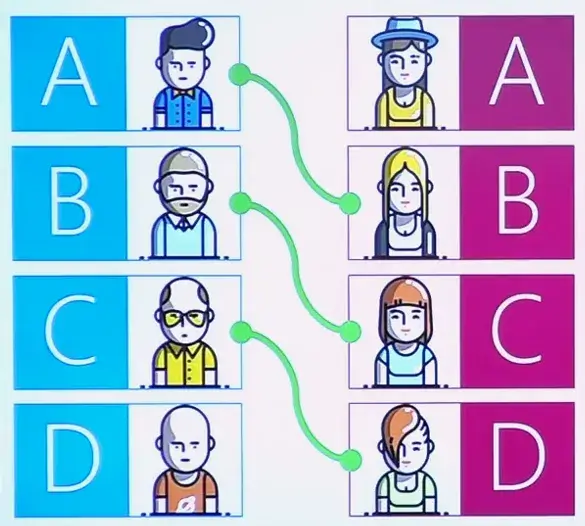
目前来看，一般高一级的男士找低一级的女士比较合适，如果不能够正确地认识自我，容易情场失意。
- 自我的评价 > 实际情况 = 自恋，你可能会经常受到挫折
- 自我的评价 < 实际情况 = 自卑，机会来了你确没有信心抓住。
最艰难的道路其实是通向自己的道路
- 你真正了解自己和你身边的人么？
- 为什么有的人对待工作就像是生命的本能？
- 为什么有的人总是快乐而有的人总是忧郁？
- 为什么有的人轻易就可以拥有很多朋友？
- 为什么有的人总是那么容易陷入爱河？
问题：哪条路能带你找到自己？
- 婚恋
- 职场
1.2 我为什么会变成现在的我？
目的
- 哪些人、哪些事影响了自我形成？
- 做什么能让现在的我变成更好的或者更快乐的我？
游戏：我的生命线
- 拿出一张白纸，在纸上画一条长长的横坐标，代表生命的长河。
- 横线的上方：那些对“现在的你”产生积极影响的人和事分为 0-100 分 5 个等级，分数越高，影响越强。
- 横线的下方：那些对“现在的你”产生消极影响的人和事同样 5 个等级，分数越高，影响越大。
积极影响 + 消极影响
积极影响：正向能量 + 心理资本 + 心理防线
消极影响都是坏吗？
重要他人
重要他人指的是在个体社会化以及心理人格形成的过程中具有重要影响的人物。
我们生命中第一个重要他人？
每个父母都是孩子生命中的重要他人，孩子越小，父母的陪伴、关爱、 欣赏越重要。
| 积极正向的我 | 消极负向的我 |
|---|---|
| 欣赏 | 忽略 |
| 肯定 | 责怪 |
| 支持 | 孤立 |
| 拥护 | 嘲讽 |
| 重视 | 放弃 |
小明的重要他人是谁？ 谁起了最大的作用？ 找对伴侣真是太幸运！
14 条生命线，7 条正向，7 条负向。
WHY? 小明的最后一条对自我的评价是现在的我很幸福，也很快乐？
让你快乐的不是事情本身，而是你对事情的看法。 小明抓住了她可以掌握的 40% 的快乐，你找到了快乐的自己么？
1.3 主题：我不是完美小孩
案例教学：完美主义者的心理图示
内容
- 通过案例描绘完美主义者的人格特征和心理模式。
- 探索完美主义者人格特点的成因：早期经历和原生家庭。
目的
- 了解完美主义者，学会和完美主义者相处。
- 帮助完美主义者在职场和婚恋中扬长避短。
完美主义你会想到
洁癖？强迫症？处女座？龟毛？吹毛求疵？道德洁癖？正直？高要求？
完美主义者的自白
{% div subfields %}
{% div subfield %}
“我说话总是直来直去的，不在意别人的感受，我也有崇高的理想，虽然暂时没有什么起色，我内心常常对自己感觉不满，我也常常对很多事情感到愤怒，现在的年轻人，老人摔倒了也不扶，毫无道德感，我感到深深忧心，我决定献身教育事业，创造一个更好更正确的人生。”
{% enddiv %}
{% div subfield %}
“自己很难放松，如果吃喝玩乐或者休息，会内疚责备自己没有完成工作。”
{% enddiv %}
{% enddiv %}
完美主义者
| 属性 | 特征 |
|---|---|
| 长相特点 | 大部分较瘦，少有胖子 |
| 表情 | 审视的目光，不苟言笑，身形挺直，骨头硬 |
| 口头禅 | “应该”和“不应该” |
| 处事原则 | 黑白分明，不易妥协，对自己和别人要求甚高，追求完美，喜欢纠正别人的错误，容易愤怒不满 |
| 人生格言 | 其身正，不令而行；其身不正，虽令不从。 （当领导者本身言行端正，不用发号施令，大家自然会效法；如果领导者本身言行不正，即使下命令，大家也不会服从。《论语 · 子路》） |
完美主义者
{% div subfields %}
{% div subfield %}
- “严肃的卫道士”
- “理想主义的改革家”
- “黑白分明的判官”
{% enddiv %}
{% div subfield %}
- 完美主义者，压抑对现实不公的怒火
- 完美主义者，充满对道德理想的高尚情怀
- 完美主义者，纠正他人来维护自己
- 完美主义者，用正直来捍卫公理的存在
{% enddiv %}
{% enddiv %}
完美主义者的代表：海瑞，海青天
- 中国的老话：严以律己，宽以待人（对圣人是这样，实际上几乎不存在）
- 心理学：我们对外的心理模式是对内心理模式的投射
- 严以律己，严以待人（海瑞）
- 宽以律己，宽以待人（嘉靖）
海青天的心理模式：对己严苛
- 总督胡宗宪尝语人曰：“昨闻海令为母寿，市肉二斤矣。”
- 王用汲去主持海瑞的丧事，看见海瑞家徒四壁，禁不住大哭起来。
摘自：当年明月《明朝那些事儿》
黄仁字《万历十五年》
海青天的心理模式：对人严苛
- 对人严苛：海瑞骂嘉靖。
- 海瑞自草《治安疏》本，抬棺上本。
- 嘉靖见奏疏大怒：“赶快把他抓起来，不要让他逃跑了”。
- 嘉靖一日读了二三遍海瑞奏章，感动得大声长叹。
然后继续不上朝
完美主义者同年困境
小大人的成长操作手册
原生家庭 要求过高，热衷比较的父母
大人希望小孩能按照他们的希望，
长成一个令人羡慕的模范儿童，
但大人的希望，
却总能让小孩感到深深失望。
——几米《我不是完美小孩》
相处方式：经常遭受挫折和冷嘲热讽
小孩火大时，大人一定要保持冷静。 大人火大时，小孩一定要赶快逃命。
——几米《我不是完美小孩》
心理恐惧：如果为不完美，就没有人会爱我
林肯说：
多数人想要多快乐，就能多快乐，
真不幸，我是属于那群少数人。
——几米《我不是完美小孩》
人生期待：如果我不完美，还会有人爱我
我知道我不是一个完美的小孩，
但你们也从来不是完美的父母，
所以我们必须互相容忍，
辛苦坚强地活下去。
——几米《我不是完美小孩》
如果你是完美主义者
- 优势：你是一个好人。
- 担心：你经常会得罪人，不那么招人喜欢。
- 警惕：你可能常遇到挫折和压力，活得很累。
如何和完美主义者相处
- 欣赏他的高标准
- 遵守他的原则
- 主动认错
- 如果你是完美主义者，你觉得你更适合哪种职业？
- 在职业发展中如何扬长避短？
1.4 主题：请叫我好好先生
案例教学：被动攻击者的心理图示。
内容
- 通过案例描绘被动攻击者的人格特征和心理模式。
- 探索被动攻击者人格特点的成因：早期经历和原生 家庭。
目的
- 了解被动攻击者，学会和被动攻击者相处。
- 帮助被动攻击者在职场和婚恋中扬长避短。
好好先生的自白
{% div subfields %}
{% div subfield %}
“在生活中，我很少给别人提要求，我一直不清楚自己要什么，觉得什么都 OK。”
{% enddiv %}
{% div subfield %}
”我觉得我天生就是做助手的料，我不喜欢做决定只要有人帮我做了决定，我就会非常完美高效的完成。”
{% enddiv %}
{% div subfield %}
“我特别害怕别人否定我，因为别人否定我就会讨厌我，讨厌我就会攻击我，没有人保护我，久而久之我再也不愿意发表我的意见，你们说什么我就听呗，反正我也不会照着做。”
{% enddiv %}
{% enddiv %}
好好先生
{% div subfields %}
{% div subfield %}
- 和事佬
- 与世无争的老好人
- 白日做梦的梦想家
{% enddiv %}
{% div subfield %}
- 好好先生，平和友善，宽容随和
- 好好先生，顺其自然，难以说不
- 好好先生，息事宁人，逃避冲突
- 好好先生，目标流失，重点模糊
{% enddiv %}
{% enddiv %}
| 属性 | 特征 |
|---|---|
| 外表 | 柔和，憨厚，一团和气。 |
| 主要特征 | 十分温和，不喜欢与人起冲突，不自夸、不爱出风头，个性淡薄。想要和人和谐相处，避开所有的冲突与紧张。 |
| 说话内容 | 等一会，再说吧，无所谓，随你吧，都可以啊。 |
| 人生格言 | 忍一时风平浪静，退一步海阔天空。 |
好好先生童年困境
小天使成长手册
原生家庭：不允许孩子自我表达的父母
{% div subfields %}
{% div subfield %}
“从小到大，数不清在餐桌上被骂哭多少回，如果哭出声，还会被立刻制止爸爸不喜欢我表达任何情绪。”
{% enddiv %}
{% div subfield %}
“我总小心翼翼观察妈妈的脸色，她脸色好一点点我才可以稍微表现下自己的需求，她脸色一沉下来我饿了也得假装忍着，我不高兴也得假装开心。”
{% enddiv %}
{% enddiv %}
相处方式：孩子常被批评、无视或者否定
用于表达→遭受批评和冷落自己的意见不重要→让大家开心比较重要
心理恐惧：如果我表达自我就没有人会爱我。
讨论题：被动攻击者会在职场和婚姻中会遇到 哪些问题？
- 如果你是好好先生
- “生病了，也要咬牙忍着去上班，要对所有人都谦和，要对领导如何如何，要对朋友如何如何，不要考虑你自己。”
- 优势：情商破表
- 担心：内在愤怒
- 警惕：好好先生变为被动攻击
如何与好好先生相处
- 给他们一个树洞。
- 给他们一个拥抱。
- 给他们一个重点。
2 人格溯源
2.1 人格图谱知多少？
内容
- 人格是什么？
- 人格的特性有哪些？
- 人格的构成
人格是什么
一、人格的含义 人格 ≈ 个性（心理学） 人品 + 性格（教育学） 尊严（如国有国格，人有人格，法律社会学）
心理学认为： 人在心理属性方面的差异主要不在于心理过程（如感知觉、记忆、思维、情绪、情感等）而在于个性心理（人格特质），主要包括个性特征和个性倾向。
- 个性 ≈ 人格（personality）：心理学习惯将生活用语“个性”专业化为“人格”一词。
- 个性包括个性特征和个性倾向，个性特征主要指性格、气质、能力等，个性倾向包括兴趣、愿望、价值观等。
- 可见，人格（个性）是指一个人的才智、情趣、价值观和习惯化的行为方式的有机整合，它体现了个人对环境适应的独特性。
人格的特性
| 属性 | 特征 |
|---|---|
| 独特性 | 独一无二。 |
| 稳定性 | 不以时空变化而变化。 |
| 整体性 | 各要素之间有内部一致性。 |
| 社会性 | 人格会有文化烙印。 |
一致性举例： 片面接收信息者往往思维方式单一，为人处事偏执，甚至对待感情也这样，一旦形成性格极难改变。
（案例：切腹的男青年）
人格是什么
三、人格的最基本构成 性格：对人对事比较稳定的态度与行为特点（主要得自后天） 气质：心理活动的强度、速度、灵活性、指向性等（主要得自先天）
-
自我意识（自我认知、自我体验、自我控制）
-
认知风格（如能力、思维特征或思维方式等）
在日常生活中，人们往往把人格简单理解为性格。
2.2 主题：人格理论哆来咪
就是介绍为了各个衡量人格所提出的模型。
内容
-
人格特质理论
-
人格类型理论
人格的结构理论
一、特质理论
- 奥尔波特的人格特质理论
- 卡特尔的人格因素理论
- 现代特质理论
奥尔波特：人格特质理论
| 类型 | 表现特征 |
|---|---|
| 首要特质 | 在一个人身上最具有代表性的个性特质，是衡量人的标准，如“张三是一个外向的人”。 |
| 中心特质 | 它的概括性比首要特质低，是由一些在某种程度上独立而又彼此联系的特质构成的。这些特质构成一个人的独特个性。如：能够吃苦、善良、肯独立思考、事业心强、工作学习条理性强等。 |
| 次要特质 | 个人在特定情境中表现出来的那些性格特征。 |
卡特尔人格测验标准分
{kind=link}
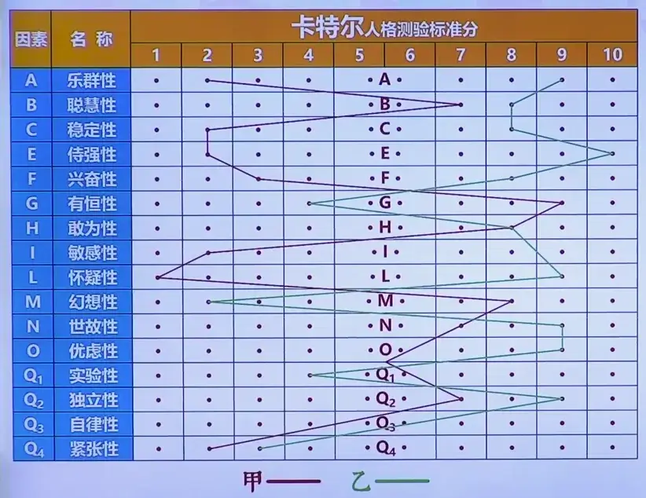
现代人格特质理论之五大人格理论
五大人格特质 NEOAC 1988 年提出
- N 神经质 Neuroticism
- E 外向性 Extraverslon
- O 开放性 Openness
- A 随和性 Agreeableness
- C 尽责性 Conscientiousness
| 人格因素 | 高分特征 | 低分特征 |
|---|---|---|
| 神经质 N | 易烦恼。喜怒无常，敏感。缺乏自信和安全感。怀疑自己，见生人拘谨，怕陌生环境。 | 情绪稳定，宽容，很少发火、自信，安心有把握。不怕陌生环境。 |
| 外向性 E | 社交能力：热情，喜欢朋友，健谈。果断性：有领导能力，有主见，做事果断。活动性：活跃，精力旺盛。 | 冷漠、害羞、沉默寡言、被动 ，人云亦云谨慎、安静，消极、不爱动。 |
| 开放性 O | 寻求变化，好奇。富有创造力和想象力。兴趣广泛，求知欲强。追求自主性。 | 遵守惯例，缺乏好奇心。务实，创造力强。兴趣不广泛，求知欲不强。愿意服从。 |
| 随和性 A | 爱帮助人，合作友好，善良。善于听取意见，行为中规中矩。可信赖，诚实，真诚。 | 冷漠、不易合作 固执、敌意、走极端。不可信，说谎，欺诈。 |
| 尽责性 C | 仔细，做事认真，一丝不苟。信守诺言，对朋友忠诚，可以信赖。自律，勤奋、意志坚定，坚持不懈。 | 粗心，疏忽，随便，不可信，不忠诚。自制力差，意志薄弱，懒惰，半途而废。 |
二、类型理论
- 单一类理论
- 对立类理论（AB 型、内外向型）
- 多元类型理论
- 四型人格
- 六型人格
- 九型人格
- 十六型人格
虽然简单地把人格分为较少的类别过于僵硬，但是还是具有一定的参考性。
六型人格
- 探究型 I
- 艺术型 A
- 社会型 S
- 影响型 E
- 事务型 C
- 技能型 R
九型人格
{kind=link}
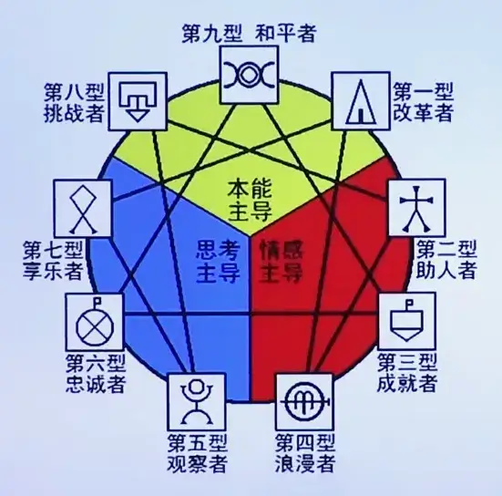
十六型人格
就是很火的 MBTI。
4 个纬度 8 个偏好
- 内向 I——外向 E
- 感觉 S——直觉 N
- 思考 T——情感 F
- 判断 J——知觉 P
2.3 主题：参差百态乃幸福本源
内容
- 人格形成的影响因素（内因）
- 人格形成的影响因素（外因）
目的
- 不同的内外因造就了人格的多样性
- 人格无好坏，独特性才是幸福之源
人格形成的影响因素
一、生物遗传因素（案例讲解）
二、早年经历与成长史（重要他人、特殊经历）
三、教育因素
- 父母教养方式
- 学校教育
- 组织教育
四、职业生涯或人生重大事件
五、社会文化
- 符号互动理论
- 地区亚文化（一方水土养一方人、地域偏见）
六、生态自然环境（变异）
父母教养方式对子女人格的影响
| 父母特征 | 子女特征 |
|---|---|
| 惩罚性、虐待性的父母 | 破坏性的、坏的婴儿 |
| 控制性的父母 | 被控制的、被责骂的婴儿 |
| 不关心的、自我为中心的父母 | 不受欢迎的婴儿 |
| 急躁的父母 | 有缺陷无用的婴儿 |
| 自私的父母 | 被剥夺的儿童 |
| 无能的父母 | 失去控制的愤怒的孩子 |
| 你爱的赞美的父母 | 依赖的需要满足的孩子 |
2.4 主题：魅力人格修炼手册
内容
- 什么样的人格特质最有魅力？
- 人格优化的原则和方法
魅力人格之自我塑造
一、什么样的人格特质最有魅力
| 属性 | 特征 |
|---|---|
| 处事特征 | 认真/负责/细致… |
| 为人特征 | 谦虚/低调/真诚… |
| 情绪特征 | 喜乐/冷静/热情… |
| 思维特征 | 睿智/幽默/深刻… |
| 价值观特征 | 豁达/开通/接纳… |
影响人际吸引的主要人格品质
自上而下，品质受欢迎的程度逐渐递减。
| 最积极品质 | 中间品质 | 最消极品质 |
|---|---|---|
| 真诚 | 固执 | 古怪 |
| 诚实 | 刻板 | 不友好 |
| 理解 | 大胆 | 敌意 |
| 患诚 | 谨慎 | 饶舌 |
| 真实 | 易激动 | 自私 |
| 可信 | 文静 | 粗鲁 |
| 智慧 | 冲动 | 自负 |
| 可信赖 | 好斗 | 贪婪 |
| 有思想 | 腼腆 | 不真诚 |
| 体贴 | 易动情 | 不善良 |
| 热情 | 羞怯 | 不可信 |
| 善良 | 天真 | 恶毒 |
| 友好 | 不明朗 | 虚假 |
| 快乐 | 好动 | 令人讨厌 |
| 不自私 | 空想 | 不老实 |
| 幽默 | 追求物欲 | 冷酷 |
| 负责 | 反叛 | 邪恶 |
| 开朗 | 孤独 | 装假 |
| 信任 | 依赖别人 | 说谎 |
魅力人格之自我塑造
二、人格优化的原则与方法
| 原则 | 基础 | 土壤 | 途径 |
|---|---|---|---|
| 择优淘劣 | 丰富知识 | 融入集体（在交往中优化） | 从小事做起（实践） |
“读史使人明智，读诗使人灵秀，数学使人周密，科学使人深刻，伦理学使人庄重，逻辑修辞学使人善辩，凡有所学 ，皆成性格。（培根）
链接：优缺点相互补充可以助人完美
{kind=link}
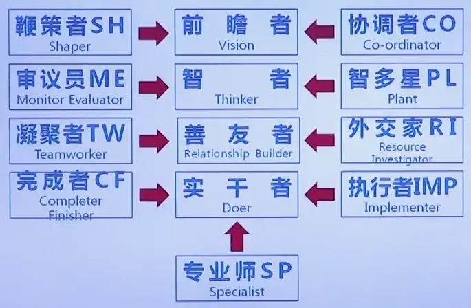
3 爱情解密
3.1 主题：你是谁，就遇见谁
吸引？我们会被怎样的人吸引？
- 长得好看的人
- 熟悉感的人
- 得不到的人（红玫瑰白玫瑰）
- 危险信号当做爱情（处于危险中容易心跳加速，此时易对帮助你的人产生好感）
内容
- 我们会吸引谁
- 谁会吸引我们
目的
- 吸引的影响因素
- 择偶的本质
什么产生吸引？
1 外貌产生吸引
| 什么样的女性身材最具有吸引力？ | 什么样的男人最有吸引力？ |
|---|---|
| 身材圆润型（45%） | 眼睛 |
| 运动型（35%） | 笑容 |
| 非常纤细型（24%） | 臀部 |
2 距离近产生吸引
- 近水楼台先得月
- 只有接近，才能喜欢
- 物理空间近 - 心理空间近
- 倒 U 型曲线
{kind=link}
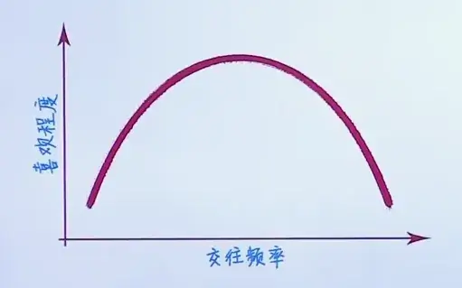
3 性格产生吸引
| 两性特质 | 男性特质 | 女性特质 |
|---|---|---|
| 令人愉快，可信赖，体贴，诚实正直，善良，有幽默感的。 | 勇敢，豪气，大度，仗义，宽容。 | 温柔，体贴，会关心人细致，善解人意的。 |
研究证明，同时具备两性特质的人，会比传统的、单一化的性格特质更具有吸引力。
4 相似产生吸引
- 有着相似背景、个性、外表吸引力和态度的人们才有可能彼此吸引。
- “共同点越多越好”
- “莫逆之交”
三代谋女郎
{kind=link}
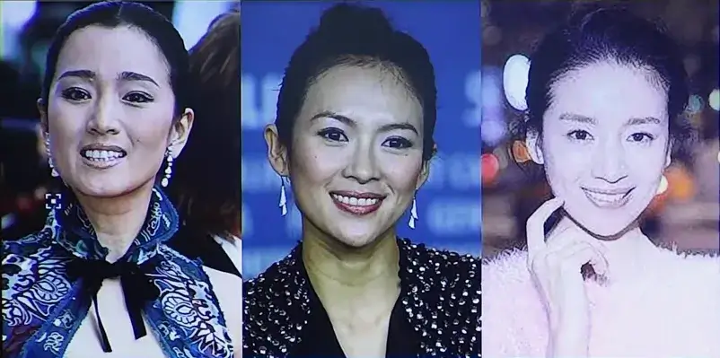
巩俐、章子怡、董洁被张艺谋看重，她们仨长得几乎一样。
{kind=link}
谋女郎跟张艺谋自身在样貌上都有相似之处。
- 幸福的人喜欢其他幸福的人。
- 快乐的人喜欢其他快乐的人。
- 有安全感的人喜欢其他有安全感的人。
- 当然，极品也常常成对出现。
1. 接受你现在的样子
- 好消息：不管你是什么样子，都有成干上万男人在寻找你，而且是热烈寻找。
- 坏消息：如果你不接受自己，正在寻找你的男人就不会有任何机会。
我就是喜欢你这个样子
——比利 · 乔
2. 成为你更喜欢的样子
你的伴侣便是你在这个世界的映射。 爱情不用寻找，在你状态最好的时候，遇到的那一个便是你的真命天子。
3.2 主题：一个逗比的自我修养
案例教学：享乐主义者的心理图示
内容
- 通过案例描绘享乐主义者的人格特征和心理模式。
- 探索享乐主义者人格特点的成因：早期经历和原生家庭。
目的
- 了解享乐主义者，学会和享乐主义者相处。
- 帮助享乐主义者在职场和婚恋中扬长避短。
享乐主义你会想到
快乐就是生产力
我是逗比我光荣
享乐主义者
{% div subfields %}
{% div subfield %}
“你若问我有什么不愉快的经历，也是有的，可是他们还来不及让我悼念，已经有别的东西吸引，刺激我啦！”
{% enddiv %}
{% div subfield %}
“把我称作老师是不全面的，我能做的远远不止这些，我还是非盈利猎头人力资源顾问，职业生涯规划家，免费的红娘……”
{% enddiv %}
{% div subfield %}
“我乐观活泼，哪怕暂时没有工作，穷的一分钱也没有，我还是觉得天不会塌下来，即便去讨饭也挺好玩！”
{% enddiv %}
{% enddiv %}
{% div subfields %}
{% div subfield %}
- “开怀幽默开心果”
- “热情洋溢万人迷”
- “见闻广博吹牛大王”
{% enddiv %}
{% div subfield %}
- 享乐主义者，充满对世界的好奇
- 享乐主义者，充满对自由平等的渴望
- 享乐主义者，借各种理由寻找快乐
- 享乐主义者，永远只有三分钟热度
{% enddiv %}
{% enddiv %}
享乐主义者：好奇心驱动的人格
-
外在特征：目光明亮，充满新奇笑容灿烂，着装风格不按照常理出牌
-
说话方式：心直口快，能言善辩笑点低，幽默感强，喜欢打岔和插嘴
-
生活风格：要新鲜，赶潮流，不喜压力，怕负面情绪，自娱娱人
-
人生格言：大千世界，尽须体验
享乐主义者的代表：老顽童周伯通
超长待机周伯通：心理健康 + 身体健康
- 须发爸然，并未全白
- 鬓眉如银，面貌丝毫无改
- 头发、胡子、眉毛反而半黑半白，竟然比前显得更年轻了。
“超级无敌”老顽童
战斗力时而超强，时而超弱。
上限秒杀绝顶高手，下限被杂鱼秒杀。
总之：心智不坚，难堪大任。
享乐主义者童年经历
小开心果的操作手册
原生家庭：古板拘谨，不苟言笑的父母。
相处方式：被管教，被束缚，感觉痛苦和不自由，因此， 想方设法逃避痛苦，让自己开心。
如果你是享乐主义者
{% div subfields %}
{% div subfield %}
优势：及时行乐，活在当下，魅力爆表，闪闪发光。
{% enddiv %}
{% div subfield %}
担心：虎头蛇尾，有始无终。
{% enddiv %}
{% div subfield %}
警惕：刻板印象导致的信任危机。
{% enddiv %}
{% enddiv %}
刻板印象
人们对某个事物或物体形成的一种概括固定的看法，并把这种观看法推而广之，认为这类事物都具有该特征，忽视个体差异。
刻板印象的好与坏
-
刻板印象的好：领会和抓住信息
-
刻板印象的坏：导致歧视和偏见
-
刻板印象最坏：让你以刻板印象的标签定义自己
如何和享乐主义者相处
红尘作伴，活的潇潇酒洒
策马奔腾，共享人世繁华
最好的伴侣：另一个逗比
享乐主义者是不是意味着很难获得世俗认定的成功？
4 亲密关系
4.1 谁认真，谁就输了
内容
- 婚姻中的社会交换
- 婚姻中的权力
- 为什么说越付出，越珍惜
目的
- 婚姻中的权力和社会交换
- 对关系的依赖和付出决定了关系中权力的大小
在婚姻里我们图什么？
| 我希望我的老婆 | 我希望我的老公 |
|---|---|
| 漂亮 | 高大 |
| 聪明 | 英俊 |
| 贤惠 | 能力出众 |
| 性格好 | 富有 |
| 专一 | 忠诚 |
| 富有 | 幽默风趣 |
| 温柔体贴 | 聪明 |
| 身材好 | 浪漫 |
| 顾家 |
- 人们就像购物一样在人际商厦里浏览，我们在寻找回报最大，成本最低的人际交往。
- 婚姻也是一种社会交换，主要是情感交换。
- 我们只会与能够提供足够利润的伴侣保持关系。
他说了算，还是她说了算？
婚姻中的权力
- 从社会交换的角度，权力基于对有价值的资源的控制。
- 如果我拥有你想要的，你会遵从我的意愿以获得我的资源，于是 我就对你拥有了权力。
- 你对关系中想要的东西渴望越高，你的伴侣对你的控制权力越大。
人际剥削法则
在任何关系中，操心较少的人对操心较多的人拥有剥削权力。
最小兴趣法则
在任何关系中，对继续和维持目前关系兴趣较小的人拥有更大的权力。
为什么很多人待在一段糟糕的关系中不愿意离去？
越付出约珍惜
- 决定关系是否长久的核心要素：替代选择。
- 即使对现在的关系不满意，在没有更好的替代选择之前，人们也不会脱离现在的关系。
{% div subfields %}
{% div subfield %}
A：在关系中，没有替代选择的一方更不愿意结束关系:
{% enddiv %}
{% div subfield %}
B：在关系中，投入或付出更多的一方更不愿意结束关系。
{% enddiv %}
{% enddiv %}
4.2 不用谢，请叫我雷锋
案例教学：渴望认同者的心理图示。
内容
- 通过案例描绘渴望认同者的人格特征和心理模式。
- 探索渴望认同者人格特点的成因：早期经历和原生家庭。
目的
- 了解渴望认同者，学会和渴望认同者相处。
- 帮助渴望认同者在职场和婚恋中扬长避短。
助人为乐你会想到
- 当代活雷锋？
- 傻瓜蛋？
- 老好人？
- 真有这样的人？
- 礼下于人，必有所求？
{% div subfields %}
{% div subfield %}
“当我发现周围还有人单身，就主动给他牵线，甚至有时候我会直接问新认识的朋友是不是单身，希望他们找到人生另一半”。
{% enddiv %}
{% div subfield %}
“我觉得在我的感情世界里，我会为他付出很多，让他一直欠着我，我不会欠他的，这样我心里才会踏实”。
{% enddiv %}
{% div subfield %}
“在人群中，我会不由自主关心那些离群的，不吭声的，没有人理会或者照顾的人”。
{% enddiv %}
{% enddiv %}
助人为乐者
{% div subfields %}
{% div subfield %}
“爱的播种机”
{% enddiv %}
{% div subfield %}
“多管闲事的使唤丫头”
{% enddiv %}
{% div subfield %}
可怕的群众基础“人脉之王”
{% enddiv %}
{% enddiv %}
- 助人为乐者，拥有把爱洒向人间的情怀；
- 助人为乐者，对所有人充满爱的渴求；
- 助人为乐者，用绝对的付出来猎取他人的感情；
- 助人为乐者，用迎合来征服他人的心。
| 基本特征 | 外表特征 | 主要特征 | 人生格言 |
|---|---|---|---|
| 渴望别人的爱或良好关系、甘愿迁就他人，常忽略自己人 | 热情，友爱，亲切，笑容灿烂，十分可爱 | 温和友善、随和 、绝不直接表达需要 | 要想获得爱，首先得付出爱 |
利他行为
定义： 一个人所作出的行为对他人是有利的，而对自己则并没有明显的利益。
利他行为大致可分为亲缘利他、互惠利他和纯粹利他。
心理模式：表面助人为乐，实际渴望认同
{kind=link}
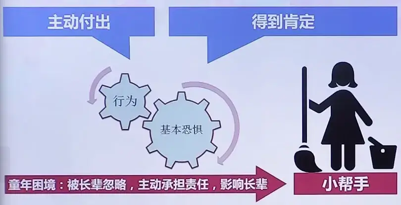
心理恐惧：如果我不付出，就没有人会爱我
自白
{% div subfields %}
{% div subfield %}
从小到大，我都是班上的生活委员，管同学们交班费，管教室卫生，每次班长分配任务，我总兴高采烈的附和我知道，我越表现的吃苦耐劳，大家才会越需要我。
{% enddiv %}
{% div subfield %}
我每天都在想怎么让老师喜欢我，让同学们不欺负我，我必须得让他们从我这里获得很多东西。
{% enddiv %}
{% enddiv %}
如果你是渴望认同者
- 优势：人缘好到爆。
- 担心：无私付出导致不对等的关系。
- 警惕：边界模糊不清带来的伤害
如何和助人为乐者相处
- 赞美他们的付出，慷慨和善良，感激他们无私帮助。
- 告诉他们在你心中的重要性和无可取代。
- 批评他们的时候要温和再温和，不要伤感情。
- “升米恩，斗米仇”你认同这句话么 ?
升米恩，斗米仇，汉语成语，指如果别人在危难的时候你给他很小的帮助，他会感激你。可如果给人的帮助太多，让其形成了依赖，一旦停止帮助，反而会让人忌恨。
- 如果你是渴望认同者，你要反思什么？
4.3 主题：我就是我，不一样的烟火
案例教学：追求独特者的心理图示。
内容
- 通过案例描绘追求独特者的人格特征和心理模式。
- 探索追求独特者人格特点的成因：早期经历和原生家庭。
目的
- 了解追求独特者，学会和追求独特者相处。
- 帮助追求独特者在职场和婚恋中扬长避短。
追求独特者
我永远都爱这样的我
快乐是快乐的方式不只一种
最荣幸是谁都是造物者的光荣
不用闪躲 为我喜欢的生活而活
不用粉墨 旁就站在光明的角落
我就是我是颜色不一样的烟火
天空海阔 要做最坚强的泡沫
我喜欢我 让蔷薇开出一种结果
孤独的沙漠里 一样盛放的赤裸裸
多么高兴在琉璃屋中快乐生活
对世界说甚么是光明和磊落
追求独特者的独白
{% div subfields %}
{% div subfield %}
“我懂那些人情世故，但我就是不想做，这样是会吃亏，但是比起让我假意迎合，我宁愿吃亏”
{% enddiv %}
{% div subfield %}
“越是我爱的人，我亲近的人，他们的话语只要有一点让我觉得受伤我就会情绪180度大转弯，感觉天崩地裂”
{% enddiv %}
{% div subfield %}
“我喜欢一句话，低调的华丽，因为它符合我的追求，我不追求第一，成为众人瞩目的焦点，但是我追求特别，让人无法忽略”
{% enddiv %}
{% enddiv %}
追求独特者
| 外在特征 | 口头禅 | 处事原则 | 人生格言 |
|---|---|---|---|
| 独特有品味，淡淡的忧郁。 | 意义，感觉，心情，味道，我认为，与众不同。 | 不做一个俗人。 | 为什么他们都不懂我呢？ |
{% div subfields %}
{% div subfield %}
“坠入凡间的精灵”
{% enddiv %}
{% div subfield %}
“悲情的浪漫主义者”
{% enddiv %}
{% div subfield %}
“理想主义战士”
{% enddiv %}
{% enddiv %}
- 追求独特者，拥有冰火两重天的情绪
- 追求独特者，充满对人生的悲悯情怀
- 追求独特者，借艺术来抒发独特的情感
- 追求独特者，用真实来捍卫自我的存在
追求独特者的代表：三毛
童年经历：原生家庭和性格特点
老二 → 孤僻 → 突发事件 → 流浪 → 自杀意识
内心世界
一切都只在她的内心，所以没人能救她。
——陈田心
我活一世比你活十世还多。
你活在别人期望的角色里，
我要做我自己，不在乎别人怎么看。
——陈文芬、师永刚联手撰著三毛家人授权出版的传记《三毛：1943-1991》
追求独特者的童年困境
小治疗师的成长操作手册
原生家庭
感觉被父母抛弃或者不理解，总觉得生活孤单，躲进自己幻想的世界在幻想中追求认同。
如果你是追求独特者
优势：情感丰富，洞察力强，创造力爆表。
担心：无法融入俗世的工作和生活。
警惕：抑郁。
如何和追求独特者相处
- 欣赏他们的创意、独特和品味。
- 给他们足够的个人空间。
- 不要用世俗的眼光衡量他们的人生。
精灵下凡怎么办？
做哪些事可以帮助追求独特者建立与俗世的连接？
5 职场地图
5.1 适合你的才是最好的
内容
- 根据性格选择职业
- MBTI 测验知多少？
一、根据性格选择职业
讨论：什么是性格？
- 抱手游戏
- 签名反映性格
- 爱收拾的人…
性格：个人对现实稳定的态度和习惯化了的行为方式。（它会影响我们的生活方式）
性格类型：按照一定的原则对性格所做的分类，用来描述一类人与另一类人的心理差异。
二、MBTI 测验知多少?
- MBTI（Myers-Briggs Type Indicator）是职业规划测评中最常使用的工具之一，它的本质是人格类型测验。
MBTI 性格类型理论的奠基者
荣格 & 凯瑟琳·布里格思 & 伊莎贝尔 · 迈尔斯母女
借助测验：你的测评结果是怎样的？
{kind=link}
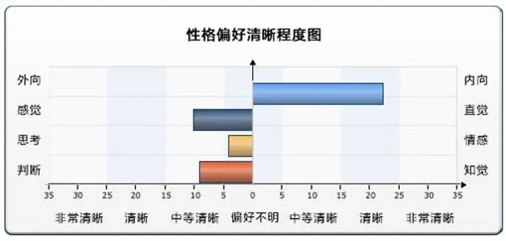
偏好的分值代表的是清晰度，而不是强度。
1. 能量指向
{kind=link}
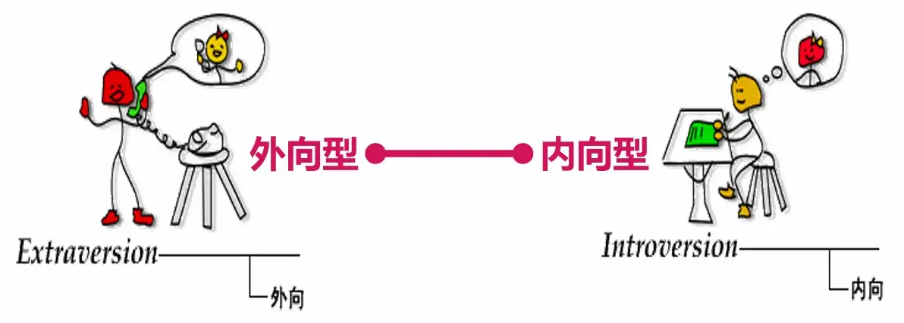
| E 外向型的人 | I 内向型的人 |
|---|---|
| 与他人在一起时感到兴奋 | 独自一人时感到兴奋 |
| 希望成为注意的焦点 | 避免成为注意的焦点 |
| 先行动，再思考 | 先思考，再行动 |
| 喜欢边想边说出声 | 在脑中思考 |
| 愿意与他人分享个人信息 | 只与少数人分享个人信息 |
| 说的比听的多 | 听的比说的多 |
| 热情的交流 | 不把热情表现出来 |
| 交往圈子大 | 个人、深交 |
| 反应迅速，喜欢快节奏 | 思考后再反应，喜欢慢节奏 |
自我审查：判断自己的偏好
{kind=link}
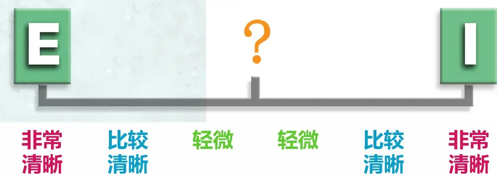
在没有任何压力的情况下，你更倾向哪一边？
探索自己的偏好
- 自评结果和测评结果是否一致 ?
- 如果不一致，是什么原因造成的 ?
- 引起混淆的变量——环境！
- 区分真实的自己和你希望的自己。
- 区分天生的偏好和后天练就的技能。
- 哪一种偏好符合你，是由你自己来做最后判断的。
2. 接受和处理信息
{kind=link}
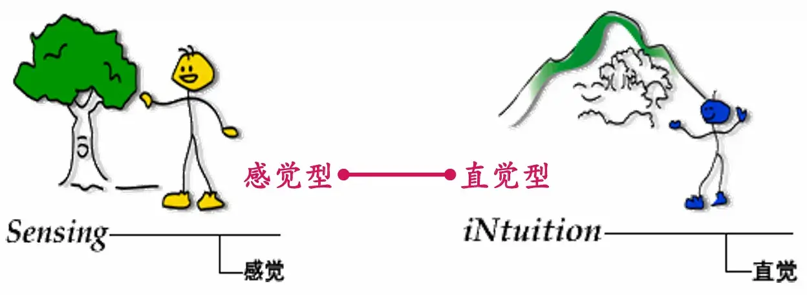
| S 感觉型的人 | N 直觉型的人 |
|---|---|
| 关注事物的物理特征 | 关注抽象内涵和联系 |
| 喜欢具有实际意义的新主意 | 喜欢新主意和新概念只是处于自己的意愿! |
| 喜欢运用和琢磨已有的技能 | 喜欢学习新技能，掌握后就容易厌倦 |
| 留心特殊的和具体的 | 着眼宏观规律 |
| 循序渐进的给出信息 | 跳跃式的给出信息 |
| 着眼现在 | 着眼未来 |
3. 决策方式
{kind=link}
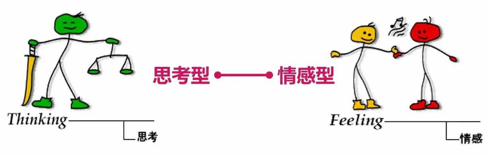
| T 思维型的人 | F 情感型的人 |
|---|---|
| 客观地分析问题 | 关心行动给他人带来的影响 |
| 崇尚逻辑和公平，有统一标准 | 注重感情和和睦，看到规则的例外 |
| 有吹毛求疵的倾向 | 自然地让别人快乐，易于理解别人 |
| 可能被视为无情、麻木、漠不关心 | 可能被视为感情化、无逻辑.脆弱 |
| 认为只有符合逻辑的感情才是正确的 | 认为所有感情都是正确的，无论有意义与否 |
| 直率、严厉 | 不伤害他人感情 |
| 受获得成就欲望的驱使 | 受到被他人理解的驱使 |
4. 生活风格
{kind=link}
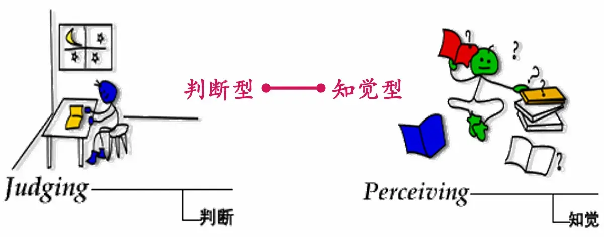
| J 判断型的人 | P 知觉型的人 |
|---|---|
| 做完决定后感到快乐 | 到最后一刻才做决定 |
| 具有“工作原则”：先工作再玩（有时间的话） | 具有“玩的原则”：先玩再工作（有时间的话） |
| 确定目标并按时完成任务 | 当有新的情况便改变目标 |
| 关心结果 | 关心过程 |
| 有计划 | 随意 |
| 通过完成任务获得满足 | 通过着手新事物而获得满足 |
| 有时间期限 | 时间是活的 |
4 个纬度 8 个偏好可以组合出 16 种人格类型，请问你是哪一类型？
内向 I——外向E
感觉 S——直觉 N
思考 T——情感 F
判断 J——知觉 P
5.2 主题：没有 1 再多的 0 也是空
内容
- 人格的功能
- 性格与疾病
- 性格与压力管理
1. 人格的功能
- 区分功能：生理差异之外的最大差异
- 交际筛选功能：相比于外表、品德、社会资源，人格更影响人与人之间的深度交往
- 问题解决功能：性格影响学习、生活、工作效率，性格决定命运（如婚恋、职业发展等）并不夸张。
- 健康维护功能
2. 性格与疾病
{% div subfields %}
{% div subfield %}
A 型性格：
时间紧迫感强、做事快、总感到时间不够用、长期处于亢奋状态、每天大部分时间处于紧张状态、做事情多面出击总想同时做一项以上的事。
——易得冠心病
{% enddiv %}
{% div subfield %}
B 型性格： 悠闲自得、不爱紧张、一般无时间紧迫感、不喜争强好胜、有耐心、能容忍。
——生活型的人
{% enddiv %}
{% div subfield %}
C 型性格：
习惯把愤怒藏在心里并加以控制，在行为上表现出与别人过分合作，原谅一些不该原谅的行为，生活和工作中没有主意和目标，不确定性多；对别人过分有耐心；尽量回避各种冲突，不表现负面的情绪（特别是愤怒），屈从于权威等。
——容易罹患癌症
{% enddiv %}
{% enddiv %}
3. 性格与压力管理
{% div subfields %}
{% div subfield %}
虚荣与攀比型：比文凭、比职位、比待遇、比房子、比财富、比子女....比来比去，最后把自己给“匕”死了。
{% enddiv %}
{% div subfield %}
理想主义者：理想和现实剧烈冲突，经常觉得自责、矛盾、苦恼而又无可奈何。
{% enddiv %}
{% div subfield %}
偏执与郁闷型：这类人不善于发现事物的阳光面，总是关注社会的阴暗面，容易发现自己的不幸而忽略自己的幸福，放大别人的幸福而缩小自己的快乐。
{% enddiv %}
{% div subfield %}
敏感多疑型
{% enddiv %}
{% enddiv %}
5.3 主题：中国创业团队 TOP3
内容
- 唐僧团队解读（成功）
- 刘备团队解读（不那么成功）
- 宋江团队解读（失败）
背景知识：优秀团队的运行特点
- 团队无我但有角色
- 协同作战（内驱力）
- 组织架构合理
- 建章立制，奖罚分明（“法治”）
- 一致对外
- 感情融合（“人治”）
- 学习提升（学习力强）
团队的要素
{% tabs team %}
愿景、目标、精神、口号。目标是愿景的具体化，团队精神是个人的心理状态，口号是愿景和目标的表现形式。
- GCD 的早期口号：”共产主义、社会主义、为人民服务、人民公仆、消灭贫富差异消灭剥削压迫……”。（农村包围城市，武装斗争）
- GCD 的近期口号：“小康、共同富裕、和谐，幸福、中华民族的伟大复兴……”（城市化）
- 确定目标要知己知彼。现实与目标的连线自然形成方向。
规则：小到纪律、规章、制度，大到传统风俗、道德、宗教、法律。规则保障“质点不作‘布朗运动’”
- 共军为什么打赢了国军？
- “三大纪律八项注意”
- “支部建立在连上”
- “党管枪”
- “党章”
领导者：领导者的人格、能力、品德直接决定着团队的生命力。
- 毛泽东为什么最终成为领袖，而其他人只是成为领导？
- 陈独秀、向忠发（+李立三）、王明（+瞿秋白）、秦邦宪（化名博古）、张闻天（化名洛甫）
- #外部机遇也影响团队目标的实现（如抗日战争）。
团队成员：角色不同、分工不同、能力不同，性格性别、文化修养也可以不同。
- 西汉的开国皇帝刘邦说：“夫运筹帷幄之中决胜千里之外，吾不如子房（张良字子房）；镇国家，抚百姓，给饷馈（供给军饷），不绝粮道，吾不如萧何；连百万之众，战必胜，攻必取，吾不如韩信。此三者，皆人杰，吾能用之，此吾所以取天下者也”。
{% endtabs %}
一把手综合评价
{% tabs topHands %}
有强烈原望和坚定决心带领企业成就一番事业，使团队成员认同企业目标并深受鼓舞。
持续关注运营效率的提开，提供一没的产品和服务，成为行业标杆企业，领跑市场。
懂得资本并借助资本市场，促进企业实现跨越式发展，实现战略目标。
坚持既定目标不动控，抓住关键核心事件，持续推动并一盯到底，直至结果达成。
曾经说过的事情、重大项目、战略举招都已经按预定目标不折不扣地完成，取得理想结果。
法律法规意识强。但导合规文化和行为，企业未出现较大法律法规风险及纠纷。
调动团队成员积极性，发挥策体智慧，不独断。
加人善任，善于发现、引进人才并主动增养，提供支持和帮助，激发团队成员对工作的兴趣和热情，搭建一流人才以伍。
{% endtabs %}
反思一下你在团队中扮演的角色
{kind=link}
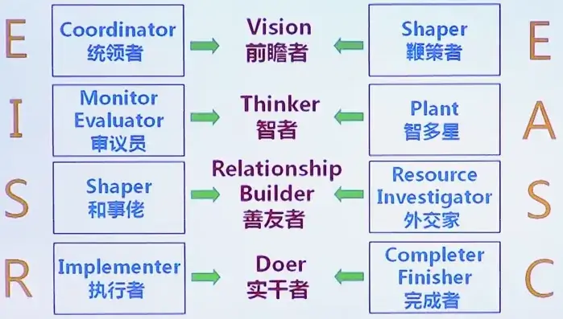
卓越团队需要各种人才有机结合。
补充讨论 1：西游记团队中为什么只有唐僧适合当领导？
- 信仰与信念
- 目标
- 上层关系（组织信任）
- 个人品格与成长经历
- 没“本事”不等于没能力或价值
补充讨论 2：孙悟空的生涯发展符合发展与教育心理学吗？如何看待他的“职业生涯发展”？如果你是女生，在孙、猪中会选择谁当男友？
- “家庭出身”与早期教育缺陷
- 青春期叛逆
- 入职及职场适应
- 社会化与职业发展
- 内部规章制度与团队成员分工
- 心理成长与生涯发展
- ……
补充讨论 3：刘备与曹操，你更欣赏哪一个？为什么？他们各自的显著性格是什么？
| 曹操 | 刘备 |
|---|---|
| 奸雄 | 仁义 |
| 高瞻远瞩 | 真诚 |
| 人力资源专家 | 低调 |
| 性情中人（真实） | 善于做秀（虚伪） |
| 多疑 | 重人治轻法治 |
| 文采出众 | 军事才能一般 |
| 现实主义+浪漫主义 | 理想主义 |
刘备：陈寿对刘备的评价是：“弘毅宽厚，知人待士，盖有高祖之风，英雄之器焉。及其举国托孤于诸葛亮，而心神无二，诚君臣之至公，古今之盛轨也。机权干略，不逮魏武，是以基宇亦狭。”但他“折而不挠，终不为下”。
在《三国演义》中，作者把刘备描写成“仁”的代表，汉室皇权正统的继承者，因而对刘备的仁爱、宽厚和知人善任的性格特征着力描画，极尽夸张，但在突出其“仁爱”时却又落入了“无能”一面，给人以“无能和“虚伪”的感觉。电视剧中的刘备常常以泪洗面，哭与泪虽然表现了刘备的“仁”，但又给人以刘备的天下是哭出来的印象，扭曲了刘备是“枭雄”“人杰”的真实形象。
6 成就探险
6.1 主题：害怕成功的人
案例教学：选择困难者的心理图示
内容
- 通过案例描绘选择困难者的人格特征和心理模式。
- 探索选择困难者人格特点的成因：早期经历和原生家庭。
目的
- 了解选择困难者，学会和选择困难者相处。
- 帮助选择困难者在职场和婚恋中扬长避短。
你有选择困难症么？
{% div subfields %}
{% div subfield %}
现代人最流行三大疾病
- 拖延症
- 强迫症
- 选择困难症
{% enddiv %}
{% div subfield %}
病入膏育的三大星座
- 天秤
- 巨蟹
- 双鱼
{% enddiv %}
{% div subfield %}
人生的两大痛苦
- 选择太少
- 选择太多
{% enddiv %}
{% enddiv %}
选择困难者的自白
{% div subfields %}
{% div subfield %}
“我组织活动的时候，就会提前想很多可能性，要是下雨了怎么办？人手不够怎么办？……总是想的太多，并且要一一做好预案，才可放心。”
{% enddiv %}
{% div subfield %}
“只表扬我一个人，或者只批评我一个人，都会让我惴惴不安”
{% enddiv %}
{% div subfield %}
“我希望自己比周围的人就好一点就够了，我不想太突出，和大队伍保持同步，会让我很安心”
{% enddiv %}
{% enddiv %}
选择困难者
{% div subfields %}
{% div subfield %}
“十万个为什么”
{% enddiv %}
{% div subfield %}
“迷途的羔羊”
{% enddiv %}
{% div subfield %}
“忠诚的跟随者”
{% enddiv %}
{% enddiv %}
- 选择困难者，充满对世界和自我的怀疑
- 选择困难者，拥有缜密周全的思维
- 选择困难者，凡事做最好的准备和最坏的打算
- 选择困难者，在即将成功的时候总是选择逃避
{% div subfields %}
{% div subfield %}
表情
- 常皱眉头
- 机警
- 冷静
{% enddiv %}
{% div subfield %}
着装
- 传统
- 低调
- 保守
- 稳健
{% enddiv %}
{% div subfield %}
- 万一
- 要不
- 可能
- 也许
- 大概
{% enddiv %}
{% div subfield %}
处事原则
- 谨慎周密
- 服从权威
{% enddiv %}
{% div subfield %}
人生格言
- 安全第一
- 预防为主
- 综合考虑
{% enddiv %}
{% enddiv %}
案例分析
{% div subfields %}
{% div subfield %}
我总是很无助，从小就是。
{% enddiv %}
{% div subfield %}
上学的时候，我丝毫不相信自己，不相信自己所下的每一个决定，我不断得推翻自己，任何事都不能善始善终。
{% enddiv %}
{% div subfield %}
我不断地从朋友、家人、老师那里寻求鼓励和支撑如果有一段我没有得到鼓励，我便觉得自己一无是处什么事业做不成。及时得到，也不太愿意相信。
{% enddiv %}
{% div subfield %}
快成功的时候，那种感觉，就是害怕成功，所以拒绝。成功会把我变成另一个人。成功会把自己变成另一种人，那种我一直讨厌的、反对的人，我本该是现在这样，平庸，但是安全。成功给我一种不安全感。
{% enddiv %}
{% div subfield %}
我讨厌那些完美的人，看不惯那些优秀的人。记得在班上，我的朋友们都喜欢长的又帅，脑子有聪明，性格活泼开朗的男孩，但我却不是，而且对他们很反感。他们总是那么骄傲，那么快乐而在我眼里却变成了装模作样甚至恶心。我反而会去喜欢那些不受人注意、有缺陷的男孩。
{% enddiv %}
{% div subfield %}
我想，该学习的是面对成功的态度，和成功以后的心态。我想我是讨厌那种自己成功之后被别人注意的眼光，告诉自己，不会有事的，自己依然是自己，而且很安全。
{% enddiv %}
{% enddiv %}
约拿情结
“约拿情结”：对成功恐惧，对成长的恐惧。
假设：“人不仅害怕失败，也害怕成功。在机遇面前自我逃避、退后畏缩的心理。
“约拿情结”发展严重时“自毁情结，即面对荣誉，成功，幸福等美好的事物时，总是浮现“我不行”和“我不配”。
童年困境：否定孩子尝试的父母
{% div subfields %}
{% div subfield %}
“我不行”
- 尝试一次一次被打断，自信心会降低，告诉自己“我不行”
{% enddiv %}
{% div subfield %}
“我不配”
- 要求一次次被否定，机会不敢争取告诉自己“我不配”。
{% enddiv %}
{% enddiv %}
{% div subfields %}
{% div subfield %}
优势：领导心中 NO.1
{% enddiv %}
{% div subfield %}
担心：害怕选错、拒绝承担
{% enddiv %}
{% div subfield %}
警惕：害怕选对、逃避成功
{% enddiv %}
{% enddiv %}
如何与选择困难者相处
- 欣赏和信任他们
- 正视焦虑
- 不要过度夸奖或关心他们
6.2 主题：我只是在胸口挂了一个“赢”字
案例教学：追求关注者的心理图示。
内容
- 通过案例描绘追求关注者的人格特征和心理模式。
- 探索追求关注者人格特点的成因：早期经历和原生家庭。
目的
- 了解追求关注者，学会和追求关注者相处。
- 帮助追求关注者在职场和婚恋中扬长避短。
追求关注者
{% div subfields %}
{% div subfield %}
“当我有事要做得时候，我就觉得天天很充实，问我累不累，习惯就好，但是一旦事情结束，就感觉不自在，特空虚。”
{% enddiv %}
{% div subfield %}
“多结交比自己优秀的人，如果你要想成功，就必须和成功的人交朋友。”
{% enddiv %}
{% div subfield %}
“我交过几个男朋友，有的喜欢妩媚动人的，我就妩媚动人；有的喜欢贤良淑德的，我就贤良淑德；有的喜欢火辣性感的，呵呵，只要我想，我就可以做到。”
{% enddiv %}
{% enddiv %}
| 长相特点 | 口头禅 | 处事原则 | 人生格言 |
|---|---|---|---|
| 胖瘦均衡，光鲜靓丽，目光明亮有神，说话斩钉截铁。 | “我可以”、“绝对可行”、“保证完成任务” | 争强好胜的工作狂，以成就衡量自己的价值高低。 | 车到山前必有路，方法总比困难多。 |
{% div subfields %}
{% div subfield %}
“永不停歇的发动机”
{% enddiv %}
{% div subfield %}
“永不卸妆的演员”
{% enddiv %}
{% div subfield %}
“拼命三郎”
{% enddiv %}
{% enddiv %}
- 追求关注者，拥有强烈的竞争意识。
- 追求关注者，充满对鲜花掌声的向往。
- 追求关注者，借成就来彰显自我价值。
- 追求关注者，用表现来显示优秀形象。
原生家庭：现实的父母
小明星成长手册
{% div subfields %}
{% div subfield %}
表现好：你就是我的心，我的肝，我的宝贝甜蜜饯儿~
{% enddiv %}
{% div subfield %}
表现不好：下雨天打孩子，闲着也是闲着~
{% enddiv %}
{% enddiv %}
成功商人都是追求关注者
如果你是追求关注者
| 优势 | 担心 | 警惕 |
|---|---|---|
| 你通常能赢。（职场） | 你通常容易忽略家庭。（婚恋） | 过于现实，丧失本真。 |
如何与渴望关注者相处
{kind=link}
- 给他经常的赞美
- 给他许多的体谅
- 不要提起他们的错误、失败
11 如果要给课程画一个句点
- YaoFANGUK/video-subtitle-extractor: 视频硬字幕提取，生成srt文件。无需申请第三方API，本地实现文本识别。基于深度学习的视频字幕提取框架，包含字幕区域检测、字幕内容提取。A GUI tool for extracting hard-coded subtitle (hardsub) from videos and generating srt files. (github.com)
- 解决问题：Could not locate zlibwapi.dll. Please make sure it is in your library path!-CSDN博客
-
如果这门课程应该有个朴素端庄的学名，应该叫**《现代人格心理学》**。人格心理学因为其复杂性和多样性，一直在心理学界处于扛把子地位。
-
越付出，越珍惜。我们每个人最爱的都是自己！我们最珍惜的都是自己的付出。认可自己比提升自己更重要。每种人格都有自己的优势，也有自己的问题。与其羡慕别人，不如认可自己。
- 比如成就型的人，他得之就有一股劲，不肯服输的劲头。所以他经常能把事情做成，失之太在意成败得失，少了豁达。
- 比如助人型的人，他得意之处就在于他时时刻刻都能轻易结交到朋友。“世上没有陌生人, 只有还未认识的朋友。”失意之处在于“相识遍天下，知心有几人”。太在意他人，忽略了自己，自己都没有成为自己的知心人。
-
希望大家学习了人格心理学，包容性会增强。就像这个世界没有相同的两片树叶，也没有一模一样的两个人。没有任何人是完全的一种单一的人格模式。也没有一种单一的人与人的关系模式。我们需要记住**人际关系最简单、最基本的特点就是：种类多样、规格不齐。**这种多样性使人际关系非常复杂，也让人际关系魅力无穷。我们常常会有人际冲突，主要是我们总喜欢用自己的坐标定义他人。
-
**心理学是一门科学。**心理学是一门研究人类心理现象及其行为活动的科学。它既有理论性的一面，也有应用（实践）性的一面。科学才不管人该做什么，不该做什么，它只研究人有什么，为什么。（不一定符合人的道德期待）